The Problem
The Switch 2 HOME Menu is the hub players return to between games, and it has to stay legible and predictable whether the console is held in the hands, propped on a table, or docked to a TV. Our three-person team evaluated it with two methods: task-based usability testing, then prototyping. The usability test surfaced pain points, and I turned those findings into a redesign. I designed a wireframe and low- and high-fidelity interactive prototypes in Figma, and justified each design decision with human factors engineering (HFE) principles.
My role: I designed the wireframe and both interactive prototypes from start to finish. I also wrote the prototyping, HFE principles, prototyping findings, and redesign suggestions sections of the team report. My teammates, Arsalan Ashraf and Jyotshna Bali, led the design description and the usability testing.
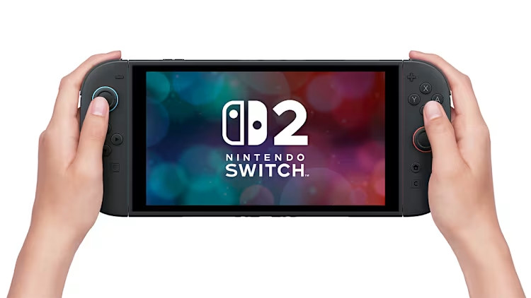
Note. Image from Nintendo of America (n.d.). © Nintendo.
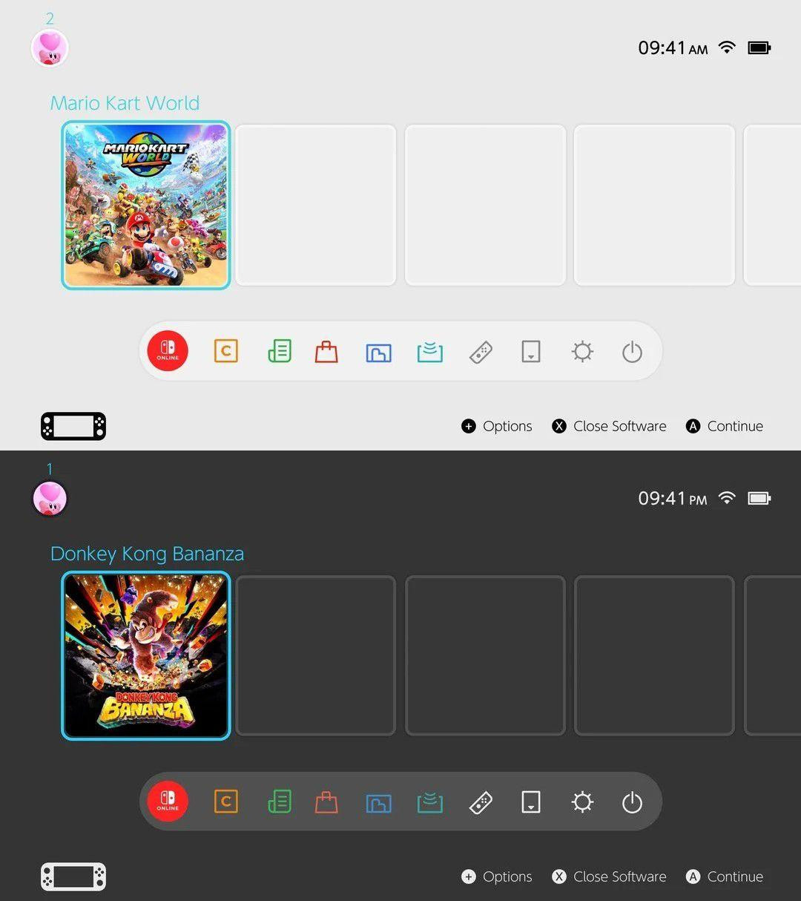
Note. From Iggy (2025). Image as reported by Nintendo Soup; may not reflect the official interface. Nintendo Switch 2 © Nintendo.
Designing From Test Results
The team's usability test had two participants, a novice and an expert. Each completed five tasks in handheld mode while thinking aloud, then filled out the System Usability Scale (SUS). Both scored 75, but their feedback differed. The novice struggled to tell what the unlabeled icons did, while the expert wanted faster access to common controls and more personalization. I used these findings as the starting point for every prototype decision.
| What the usability test found | How I addressed it in the prototypes |
|---|---|
| The expert wanted game icons that look more like the artwork on physical game cases, and larger icons. | Full portrait cover-art game cards replace the small square icons. |
| The expert found the game title shown above each icon redundant. | The cover art carries the title, so the cards have no separate title label. |
| The expert suggested a brightness control on the home screen, next to Wi-Fi, battery, and time. | A brightness slider is grouped with the status indicators in the top-right corner. |
| The novice couldn't tell what several unlabeled icons did, and the expert asked for larger bottom icons. | A wider, full-width navigation bar on the bottom edge, with larger buttons closer to the thumbs. The lo-fi prototype labels each button. |
| The expert wanted to customize the home screen theme around favorite games. | Four Nintendo-themed home screens (Mario, Zelda, Kirby, Donkey Kong) alongside Light and Dark. |
Note. Both participants were team members, so these findings are preliminary rather than generalizable.
The Blueprint
I started with a static, grayscale wireframe to lay out the redesign before adding interactivity. I built it on a 1920 × 1080 frame in Inter. Portrait rectangles with X's hold the place of game covers in a horizontal row. A black frame marks the selected game, and progress bars sit beneath each cover, left off for games without a story mode.
Ten circular placeholders along the bottom edge form the new navigation bar. Three in the top left hold profile icons. The top right holds a clock, Wi-Fi and battery placeholders, and a new brightness slider. I also designed the theme selector pop-up: a 3 × 2 grid of crossed-box previews, a Ⓑ Back button, and a black frame with a ✓ around the current theme. Arrows connect the screens to show the user flow, and eight annotations explain the changes.
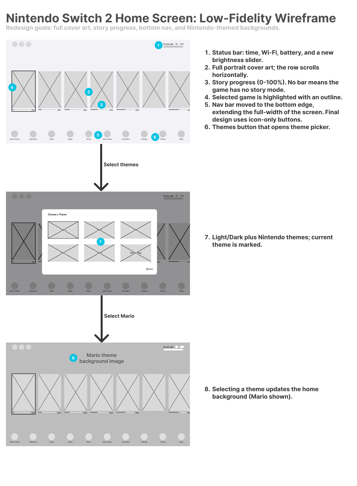
- Status bar with time, Wi-Fi, battery, and a new brightness slider
- Full portrait cover art in a row that scrolls sideways
- Story progress from 0 to 100%. No bar means the game has no story mode
- The selected game has an outline
- Nav bar moved to the bottom edge at full width, closer to the thumbs
- Themes button that opens the theme picker
- Light/Dark plus Nintendo themes, with the current theme marked
- Selecting a theme updates the home background (Mario shown)
Making the Flow Clickable
Next, I turned the wireframe into an interactive lo-fi prototype. I duplicated the light home screen and its theme selector, then gave the copy a red background to represent the Mario theme. Each placeholder got a game title (Donkey Kong Bananza, Mario Kart World, Tears of the Kingdom, and more), and each theme preview got a theme name. Each nav button got a text label.
In Figma, I wired the screens together. The game row scrolls horizontally. The Themes button opens the theme selector, choosing Light or Mario switches the home screen, and pressing Ⓑ Back or clicking outside the pop-up returns to the current home screen.
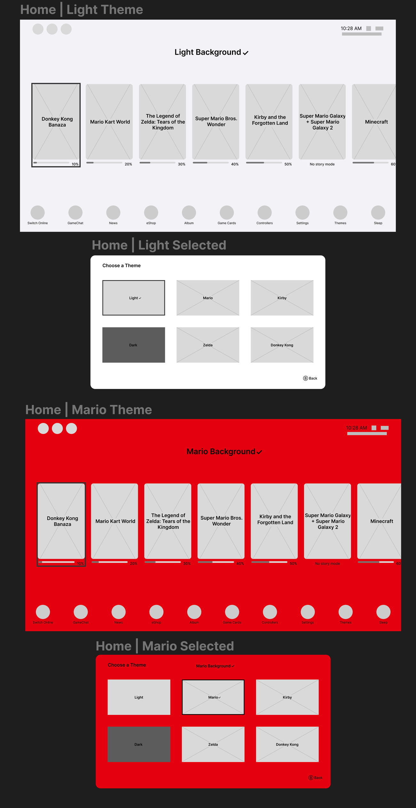
Lo-fi prototype screens for the Light and Mario themes, home screen and theme picker.
Try the Lo-Fi Prototype
Open lo-fi prototype in Figma ↗From Gray Boxes to Real Screens
I built the hi-fi prototype on top of the lo-fi layout. I edited every game cover to remove console branding and age ratings, so only the cover art remained. I added an "All Software" card with a 3 × 3 grid icon to the end of the game row. The nav icons came from the open-source Iconify plugin and are colored individually. The profile icons are actual Switch 2 profile icons.
For focus and contrast, I used a single cyan accent for the progress bars, the brightness slider, and the glowing selection frame around the current game. Covers, progress bars, and status items also got subtle drop shadows and glows so they separate cleanly from any background.
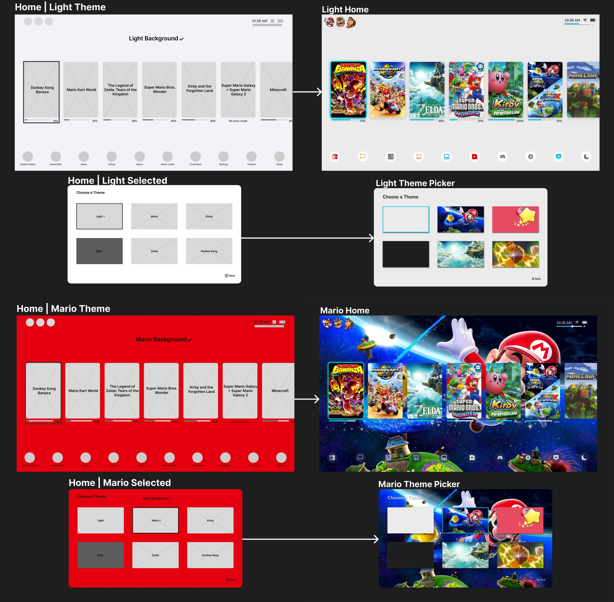
The Light and Mario themes, home screen and theme picker, shown as low-fidelity prototype screens (left) and high-fidelity prototype screens (right). Note. Cover images adapted from Jerry88pl (n.d.), megasnorlax (n.d.-a, n.d.-b, n.d.-c, n.d.-d), Nutsacc (n.d.), and SirRandall (n.d.); background image from Super Mario World Wallpaper (n.d.); profile icons from Random Talking Bush (2017). Original artwork © Nintendo; Kirby and the Forgotten Land © Nintendo/HAL Laboratory, Inc.; Minecraft © Mojang AB/Microsoft.
Tuning Each Theme
All six home screens share one layout. Only colors and the background change, so every theme needed its own contrast adjustments.
| Theme | Background | Text & status icons | Nav buttons |
|---|---|---|---|
| Light | Light gray | Black | White, with colored icons |
| Dark | Dark gray | Light gray | Dark gray, icons keep their colors |
| Mario | Super Mario Galaxy art | Light gray | Dark blue, reduced opacity |
| Zelda | Tears of the Kingdom art | Dark gray | Dark gray buttons and icons |
| Kirby | Kirby art | Light gray | Pink, reduced opacity |
| Donkey Kong | Donkey Kong Bananza art | Light gray | Yellow, reduced opacity |
Each theme selector also matches its home screen's background. The current theme is marked with a cyan frame and ✓. Preview images get faint shadows on light backgrounds, a white glow on Dark, and subtle white borders on the busier Mario, Zelda, and Donkey Kong backgrounds so their edges stay visible.
Background Themes
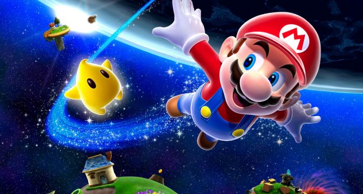
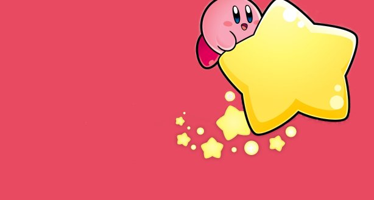
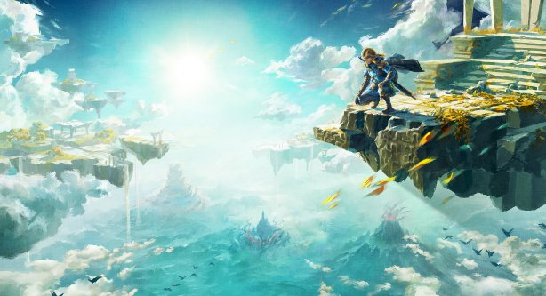
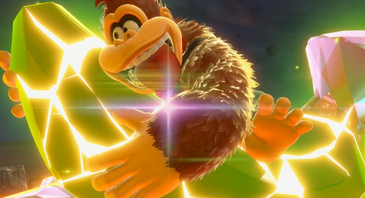
Note. Background images from Dean (2025), Kirby HD Wallpaper (n.d.), Nintendo (n.d.-b), and Super Mario World Wallpaper (n.d.). Original artwork © Nintendo; Kirby artwork © Nintendo/HAL Laboratory, Inc.
Themes Applied
Pick a theme to see its home screen and theme selector.
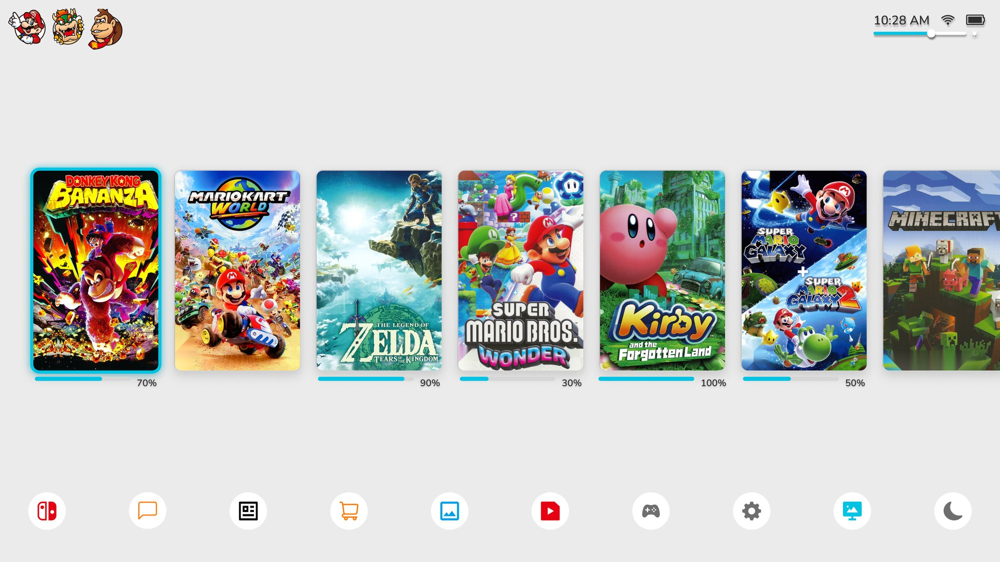
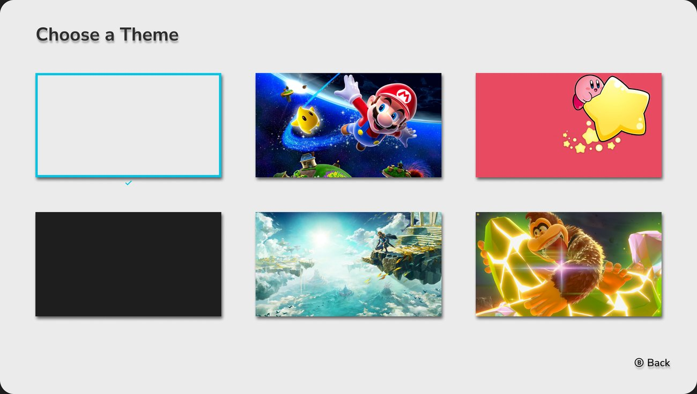
The default theme. Nav icons keep their colors on a neutral gray background.
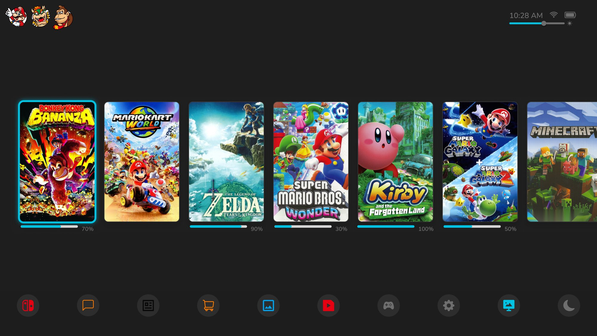
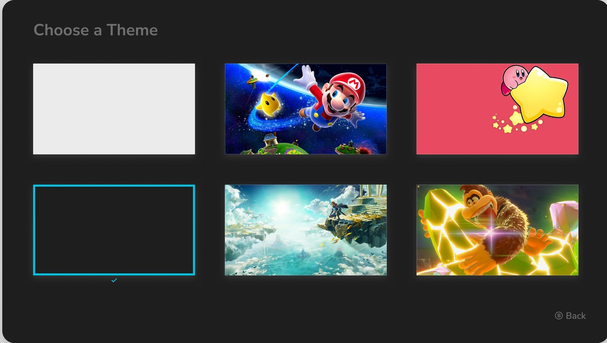
A dark version of the default with the same colored icons and cyan focus outline.
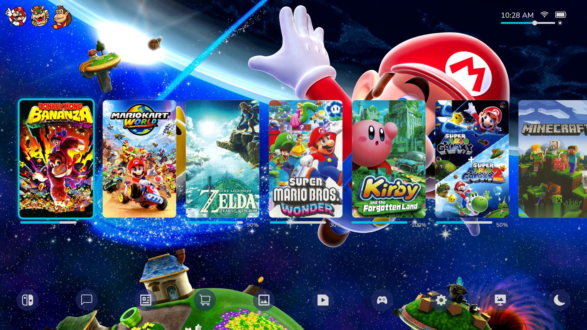
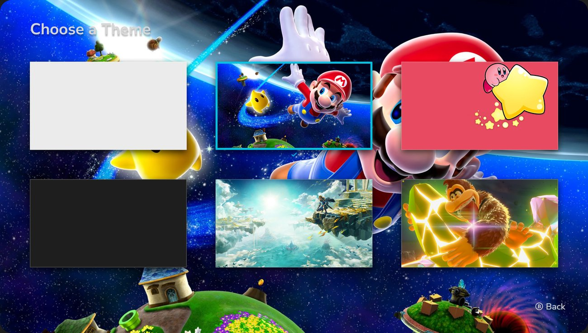
Super Mario Galaxy art. Nav icons switch to translucent circles so the background shows through.
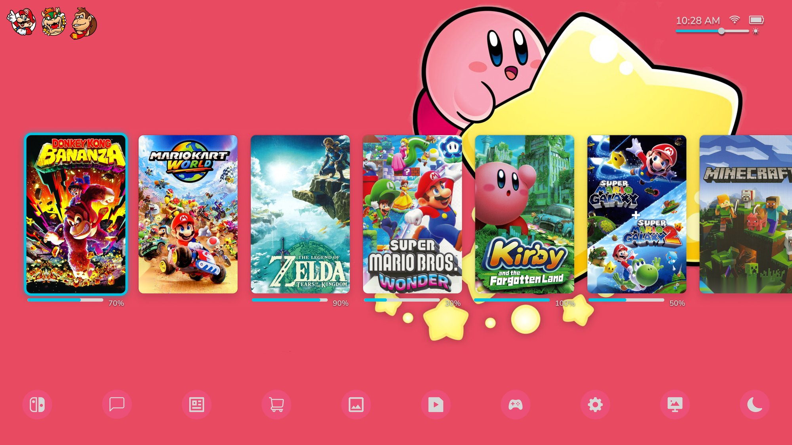
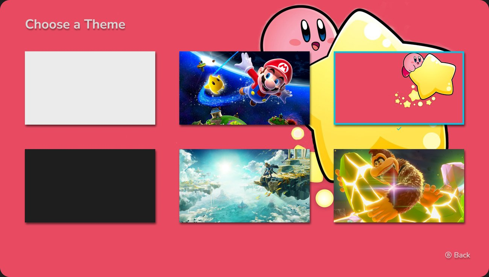
A flat pink background with Kirby art. Nav icons pick up the theme color.
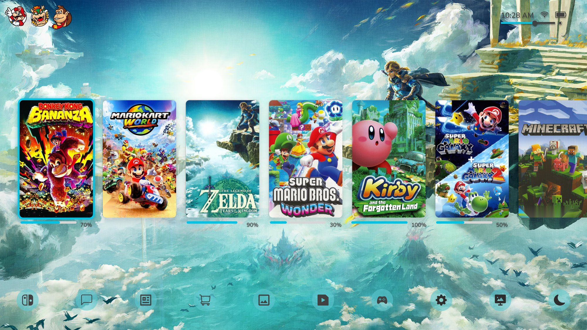
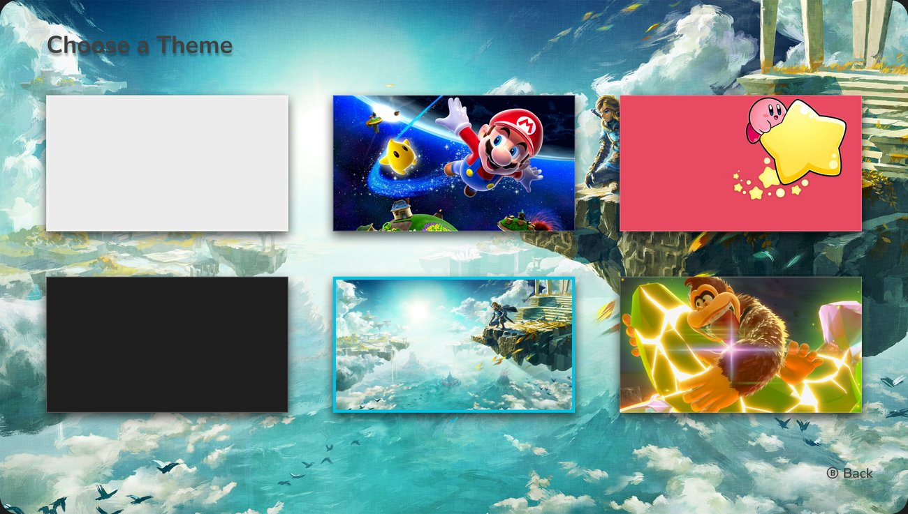
Tears of the Kingdom art with nav icons tinted to match the sky.
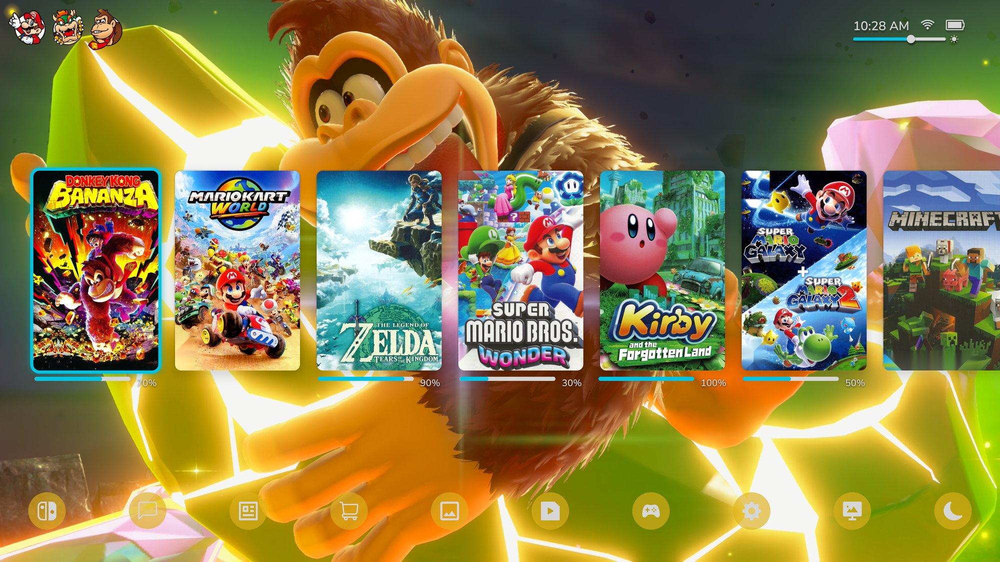
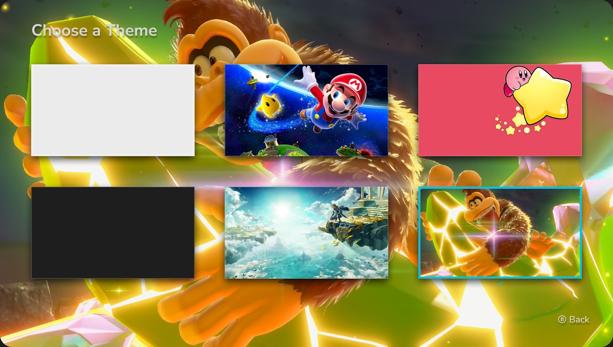
Donkey Kong Bananza art with warm, gold-tinted nav icons.
Note. Cover images adapted from Jerry88pl (n.d.), megasnorlax (n.d.-a, n.d.-b, n.d.-c, n.d.-d), Nutsacc (n.d.), and SirRandall (n.d.); background images from Dean (2025), Kirby HD Wallpaper (n.d.), Nintendo (n.d.-b), and Super Mario World Wallpaper (n.d.); profile icons from Random Talking Bush (2017). Original artwork © Nintendo; Kirby artwork © Nintendo/HAL Laboratory, Inc.; Minecraft © Mojang AB/Microsoft.
Try the Hi-Fi Prototype
Scroll the game row, open the theme selector from the Themes button (the desktop icon), and switch between all six themes.
Open hi-fi prototype in Figma ↗Why Each Design Choice Works
I grounded every addition and change in an established HFE principle, so each design decision rests on evidence rather than intuition alone.
| Design choice | HFE principles | How it helps the user |
|---|---|---|
| Full cover-art game cards | Fitts' law; attentional salience & visual hierarchy; recognition over recall | Larger targets are faster to select, especially by touch in handheld mode. Familiar box art lets players spot a game instead of reading for it. |
| Wider bottom nav bar | Fitts' law; thumb reach on handheld touchscreens; visual hierarchy | Bigger buttons sit closer to the thumbs, and the layout separates secondary system functions from the primary game row. |
| Home-screen brightness slider | Minimizing information access cost; functional grouping; compatible mapping | A frequent adjustment no longer requires System Settings. It sits with the other status indicators, and sliding left dims while sliding right brightens, matching expectations. |
| Story progress bars | Knowledge in the world; proximity compatibility principle; redundancy gain | Progress is visible without opening the game. The bar sits directly beneath its game, and a percentage backs up the bar. |
| Cyan selection frame, glows & shadows | Attentional salience; discriminability; figure-ground segregation | The cursor is easy to find, and covers separate cleanly from any background. |
| Nintendo-themed home screens | Personalization; aesthetic-usability effect; consistency & mental models | Players can personalize their console. Because the layout never changes between themes, spatial memory of where everything sits carries over. |
| Nav icon colors per theme | Figure-ground segregation; luminance contrast | Buttons stay distinguishable from the background art. |
| Image previews in the theme selector | Recognition over recall | Players see each theme instead of having to remember what a name looks like. |
| Cyan frame + ✓ on the current theme | Redundancy gain; discriminability | Two cues mark the selection. Tailored shadows, glows, and borders keep preview edges visible on every background. |
| Ⓑ Back or tap outside to close | User control and freedom | Two quick ways to return to the home screen. |
| "All Software" tile with grid icon | Signifiers; redundancy gain; visibility of system status | The grid signals the full library, and its spot at the end of the row shows the row is finite. |
Note. Principles drawn from Fitts (1954), MacKenzie (1992), Bergstrom-Lehtovirta and Oulasvirta (2014), Wickens et al. (2022), Wickens and Carswell (1995), Nielsen (1994), Norman (2013), Sanders and McCormick (1993), Blom and Monk (2003), Kurosu and Kashimura (1995), Tractinsky et al. (2000), and Wagemans et al. (2012).
Expected benefit
Faster game selection, easier thumb reach, fewer trips into System Settings, and a home screen players can make their own.
Trade-off to watch
Busy themed backgrounds such as Mario and Donkey Kong may add cognitive load and compete with the game cards for attention (Sweller, 1988). Nav buttons tinted to match a theme may also lose salience.
Prototyping Findings
Prototyping showed me how well-designed the original HOME Menu already is. It's minimalist and puts the user first, presenting only a few essential tasks with almost no visual clutter. That made it hard to find pain points worth redesigning. Building interactive prototypes instead of static mockups helped me understand how each redesigned element would actually behave before implementation, and taught me Figma's prototyping tools in depth.
What the Original Gets Right
Clear cursor location
A cyan frame always shows which element is selected.
Button prompts
Small cues like "Ⓧ Close software" and "Ⓐ Continue" in the bottom right remind players which button does what.
Games come first
Game cards are the most salient element and sit in the user's focal vision, with system areas one tilt or press away.
Status at a glance
Wi-Fi and battery level are always visible in the top-right corner.
Strengths, Counterarguments & Next Steps
The prototypes bring four improvements suggested by usability testing: larger game cards, a redesigned and larger navigation bar, a home-screen brightness slider, and Nintendo-themed home screens. Each comes with a counterargument worth weighing against Nintendo's minimalist design language.
| Redesign | Counterargument | Possible fix |
|---|---|---|
| Nintendo-themed home screens | Busy backgrounds add visual clutter and cognitive load. | Use simpler backgrounds, which would also sharpen the edges of game cards and nav buttons and keep the game row the clear focal point. |
| Theme-matched nav buttons | Buttons colored like the background lose salience. | Use nav button colors that contrast with each background. |
| Home-screen brightness slider | Unnecessary clutter for players who use auto-brightness. | Add a setting to show or hide the slider. |
| Theme selector pop-up | Only six themes fit at once. | Use a larger pop-up if more themes are added. |
Next step: run a usability test on the hi-fi prototype to confirm whether each HFE principle actually improves the experience, and find which changes to keep, adjust, or remove.
Sources
- Bergstrom-Lehtovirta, J., & Oulasvirta, A. (2014). Modeling the functional area of the thumb on mobile touchscreen surfaces. In Proceedings of the SIGCHI Conference on Human Factors in Computing Systems (pp. 1991–2000). ACM. https://doi.org/10.1145/2556288.2557354
- Blom, J. O., & Monk, A. F. (2003). Theory of personalization of appearance: Why users personalize their PCs and mobile phones. Human–Computer Interaction, 18(3), 193–228. https://doi.org/10.1207/S15327051HCI1803_1
- Dean, I. (2025, July 18). Donkey Kong Bananza review: Switch 2 finally has its must-play system seller [Image]. Creative Bloq. https://www.creativebloq.com/entertainment/gaming/donkey-kong-bananza-review-switch-2-finally-has-its-must-play-system-seller
- Figma. (n.d.-a). Apply effects to layers. Figma Learn – Help Center. Retrieved October 3, 2026, from https://help.figma.com/hc/en-us/articles/360041488473-Apply-effects-to-layers
- Figma. (n.d.-b). Create overlays in your prototypes. Figma Learn – Help Center. Retrieved October 3, 2026, from https://help.figma.com/hc/en-us/articles/360039818254-Create-overlays-in-your-prototypes
- Figma. (n.d.-c). Guide to prototyping in Figma. Figma Learn – Help Center. Retrieved October 3, 2026, from https://help.figma.com/hc/en-us/articles/360040314193-Guide-to-prototyping-in-Figma
- Figma. (n.d.-d). Prototype scroll and overflow behavior. Figma Learn – Help Center. Retrieved October 3, 2026, from https://help.figma.com/hc/en-us/articles/360039818734-Prototype-scroll-and-overflow-behavior
- Figma. (n.d.-e). What is wireframing? Figma Resource Library. Retrieved October 10, 2026, from https://www.figma.com/resource-library/what-is-wireframing/
- Fitts, P. M. (1954). The information capacity of the human motor system in controlling the amplitude of movement. Journal of Experimental Psychology, 47(6), 381–391. https://doi.org/10.1037/h0055392
- Iconify. (n.d.). Iconify [Figma plugin]. Figma Community. https://www.figma.com/community/plugin/735098390272716381/iconify
- Iggy. (2025, May 6). Nintendo Switch 2 to launch with two system themes [Image of light and dark home menu themes]. Nintendo Soup. https://nintendosoup.com/nintendo-switch-2-to-launch-with-two-system-themes/
- Jerry88pl. (n.d.). Super Mario Galaxy + Super Mario Galaxy 2 [Cover image]. The Cover Project. https://www.thecoverproject.net/view.php?game_id=19903
- Kirby HD wallpaper: A starry adventure awaits [Wallpaper]. (n.d.). Wallpaper Abyss. https://wall.alphacoders.com/big.php?i=317170
- KirbyFan932. (n.d.). Super Mario Odyssey [Cover image]. The Cover Project. https://www.thecoverproject.net/view.php?game_id=9843
- Kortum, P. (2008). HCI beyond the GUI: Design for haptic, speech, olfactory, and other nontraditional interfaces. Morgan Kaufmann.
- Kurosu, M., & Kashimura, K. (1995). Apparent usability vs. inherent usability: Experimental analysis on the determinants of the apparent usability. In Conference Companion on Human Factors in Computing Systems (pp. 292–293). ACM. https://doi.org/10.1145/223355.223680
- lenoxseer. (n.d.). The Legend of Zelda: Link’s Awakening – Nintendo Switch [Cover image]. The Cover Project. https://www.thecoverproject.net/view.php?game_id=10120
- LoganGamer20. (n.d.). Super Mario 3D World + Bowser’s Fury [Cover image]. The Cover Project. https://www.thecoverproject.net/view.php?game_id=14884
- MacKenzie, I. S. (1992). Fitts’ law as a research and design tool in human–computer interaction. Human–Computer Interaction, 7(1), 91–139. https://doi.org/10.1207/s15327051hci0701_3
- Martin, B., & Hanington, B. (2019). Universal methods of design, expanded and revised: 125 ways to research complex problems, develop innovative ideas, and design effective solutions. Rockport Publishers.
- megasnorlax. (n.d.-a). Donkey Kong Bananza [Cover image]. The Cover Project. https://www.thecoverproject.net/view.php?cover_id=30726
- megasnorlax. (n.d.-b). The Legend of Zelda: Tears of the Kingdom [Cover image]. The Cover Project. https://www.thecoverproject.net/view.php?cover_id=24720
- megasnorlax. (n.d.-c). Minecraft [Cover image]. The Cover Project. https://www.thecoverproject.net/view.php?game_id=14828
- megasnorlax. (n.d.-d). Super Mario Bros. Wonder [Cover image]. The Cover Project. https://www.thecoverproject.net/view.php?game_id=18500
- megasnorlax. (n.d.-e). Super Smash Bros. Ultimate [Cover image]. The Cover Project. https://www.thecoverproject.net/view.php?game_id=14841
- Nielsen, J. (1994). Enhancing the explanatory power of usability heuristics. In Proceedings of the SIGCHI Conference on Human Factors in Computing Systems (pp. 152–158). ACM. https://doi.org/10.1145/191666.191729
- Nintendo. (n.d.-a). The Legend of Zelda: Ocarina of Time – Nintendo Switch 2 [Cover image]. GameStop. https://www.gamestop.com/video-games/nintendo-switch-2/products/the-legend-of-zelda-ocarina-of-time---nintendo-switch-2/20036066.html
- Nintendo. (n.d.-b). The Legend of Zelda: Tears of the Kingdom [Key art]. https://zelda.com/assets/img/tears/keyArt_desktop.jpg
- Nintendo of America. (n.d.). Nintendo Switch 2 system [Image of the console in handheld mode]. https://www.nintendo.com/us/store/products/nintendo-switch-2-system-123669/
- Nintendo of America. (2025a). Nintendo Switch 2 HOME Menu overview and Accessibility settings. Nintendo Support. https://en-americas-support.nintendo.com/app/answers/detail/a_id/68181
- Nintendo of America. (2025b). Nintendo Switch 2 system and technical specifications. https://www.nintendo.com/us/gaming-systems/switch-2/tech-specs/
- Norman, D. A. (2013). The design of everyday things (Rev. and expanded ed.). Basic Books.
- Nutsacc. (n.d.). Kirby and the Forgotten Land [Cover image]. The Cover Project. https://www.thecoverproject.net/view.php?game_id=15137
- Random Talking Bush. (2017, July 12). Profile icons [Sprite sheet]. The Spriters Resource. https://www.spriters-resource.com/nintendo_switch/systembios/asset/93824/
- Salvendy, G., & Karwowski, W. (Eds.). (2021). Handbook of human factors and ergonomics (5th ed.). Wiley.
- Sanders, M. S., & McCormick, E. J. (1993). Human factors in engineering and design (7th ed.). McGraw-Hill.
- SirRandall. (n.d.). Mario Kart World [Cover image]. The Cover Project. https://www.thecoverproject.net/view.php?cover_id=30716
- Super Mario World wallpaper [Wallpaper]. (n.d.). GetWallpapers. https://getwallpapers.com/collection/super-mario-world-wallpaper
- Sweller, J. (1988). Cognitive load during problem solving: Effects on learning. Cognitive Science, 12(2), 257–285. https://doi.org/10.1207/s15516709cog1202_4
- Ting, C. A. R., Mondragon, J. M., Almirante, J. I. F., Ramolete, G. I. L., Cohen, M. A. P. C., & Custodio, B. P. (2020). Usability and gaming experience assessment of the Nintendo Switch user interface by Filipino users. In T. Ahram & C. Falcão (Eds.), Advances in usability, user experience, wearable and assistive technology (pp. 777–783). Springer. https://doi.org/10.1007/978-3-030-51828-8_103
- Tractinsky, N., Katz, A. S., & Ikar, D. (2000). What is beautiful is usable. Interacting with Computers, 13(2), 127–145. https://doi.org/10.1016/S0953-5438(00)00031-X
- UXtweak. (n.d.). System usability scale [Blog post]. https://blog.uxtweak.com/system-usability-scale/
- Wagemans, J., Elder, J. H., Kubovy, M., Palmer, S. E., Peterson, M. A., Singh, M., & von der Heydt, R. (2012). A century of Gestalt psychology in visual perception: I. Perceptual grouping and figure–ground organization. Psychological Bulletin, 138(6), 1172–1217. https://doi.org/10.1037/a0029333
- Wickens, C. D., & Carswell, C. M. (1995). The proximity compatibility principle: Its psychological foundation and relevance to display design. Human Factors, 37(3), 473–494. https://doi.org/10.1518/001872095779049408
- Wickens, C. D., Helton, W. S., Hollands, J. G., & Banbury, S. (2022). Engineering psychology and human performance (5th ed.). Routledge. https://doi.org/10.4324/9781003177616
All game artwork, characters, and trademarks belong to their respective owners and are used here for non-commercial, educational portfolio purposes only.